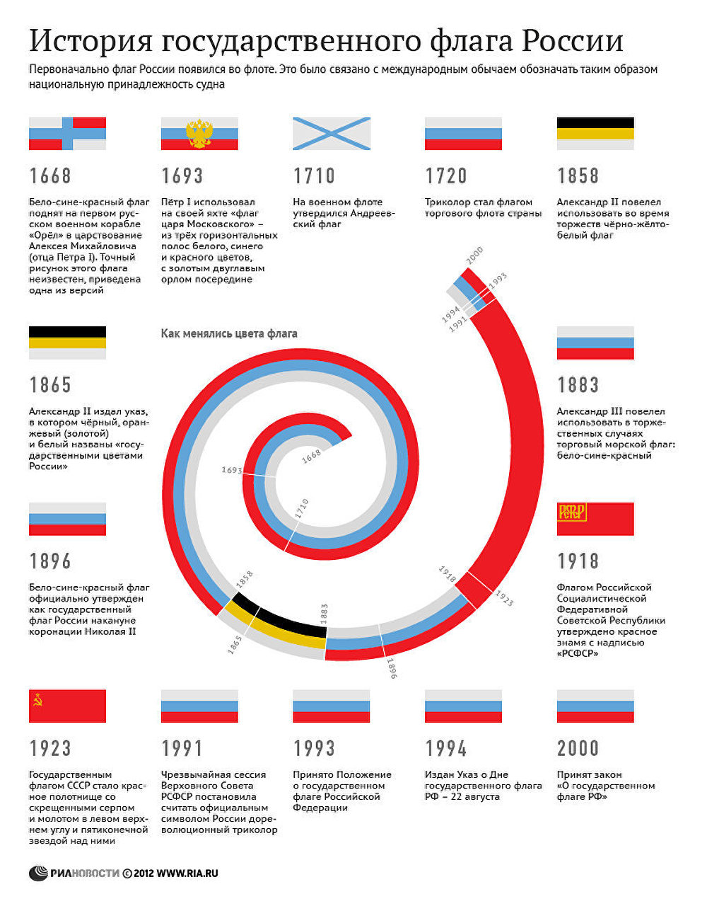

О Москве
Москва́ (произношение (инф.)) — столица России, город федерального значения, административный центр Центрального федерального округа и центр Московской области, в состав которой не входит[6]. Крупнейший по численности населения город России и её субъект — 13 097 539[3] человек (2023), самый населённый из городов, полностью расположенных в Европе, занимает 22-е место среди городов мира по численности населения[7], крупнейший русскоязычный город в мире. Центр Московской городской агломерации. Самый крупный город Европы по площади[8].
Первое письменное упоминание о Москве относится к 1147 году[6], и история города насчитывает, по меньшей мере, 875 лет. Археологические данные свидетельствуют о существовании городского поселения в районе будущего Кремля с XI века[9]. Москва — историческая столица Великого княжества Московского, Русского царства, Российской империи (в 1728—1732 годах[10][11][12][13]), Советской России и СССР. Город-герой. В Москве находятся федеральные органы государственной власти Российской Федерации (за исключением Конституционного суда), посольства иностранных государств, штаб-квартиры большинства крупнейших российских коммерческих организаций и общественных объединений.
Расположена на западе России, на реке Москве в центре Восточно-Европейской равнины, в междуречье Оки и Волги. Как субъект федерации, Москва граничит с Московской и Калужской областями.
Москва — популярный туристический центр России. Кремль, Красная площадь, Новодевичий монастырь и Церковь Вознесения в Коломенском входят в список объектов всемирного наследия ЮНЕСКО[14]. Она является важнейшим транспортным узлом: город обслуживают 6 аэропортов, 10 железнодорожных вокзалов, 3 речных порта (имеется речное сообщение с морями бассейнов Атлантического и Северного Ледовитого океанов). С 1935 года в Москве работает метрополитен. Москва — спортивный центр страны. В 1980 году в Москве прошли XXII летние Олимпийские игры, а в 2018 город стал одним из хозяев чемпионата мира по футболу.
Наша история
Первое упоминание о Москве встречается в летописи XII века (отсюда датой основания города считается 1147 год) как владение ростово-суздальского князя Юрия Долгорукого.
Хотя заселение территории будущей Москвы, как свидетельствуют многочисленные археологические памятники, началось в эпоху неолита (каменный век) племенами охотников и рыболовов. В эпоху бронзового века на ней жили скотоводы — представители фатьяновской культуры, в эпоху железного века — представители дьяковской культуры. Во второй половине первого тысячелетия нашей эры в районе современной Москвы возникли поселения славян — вятичей и кривичей.
Археологические раскопки свидетельствуют, что в конце XI века на Боровицком холме при впадении реки Неглинной в реку Москву располагался укрепленный городок, вокруг которого развивался ремесленно-торговый посад.
Согласно летописному сказанию, в середине XII века на месте Москвы стояли на Москве-реке "села красные" боярина Степана Кучки.
Как повествует предание, Юрий Долгорукий победил Кучку и превратил городок на Боровицком мысу в одну из своих окраинных резиденций.
Некоторое время город назывался Кучков, а затем за ним закрепилось название Москва — по имени Москвы-реки.
Согласно Тверской летописи, около 1156 года на Боровицком холме была возведена новая, более обширная деревоземляная крепость, в XIV веке получившая название Кремль. Общая территория города расширилась в пять-шесть раз. Москва стала важным городом и оборонительным рубежом Владимиро-Суздальского княжества.
В 1237-1238 годах город подвергся разорению в результате нашествия войск хана Батыя, но вскоре был вновь отстроен. Со второй половины XIII века Москва стала центром самостоятельного княжества. Родоначальником династии ее князей был сын Александра Невского Даниил Александрович.
С конца XIII века Москва и ее окрестности стали местом притяжения выходцев из различных регионов Руси, содействовавших хозяйственному освоению московского края.
Рост и возвышение Москвы в значительной степени были связаны с ее расположением на пересечении торговых путей, ведущих к верховьям Волги, Оки и Днепра. К концу XIII века относится сооружение первых каменных храмов в Кремле, положившее начало оформлению его главной площади (Соборной).
В XIV веке Москва стала центром Московского великого княжества, а также в остром соперничестве с Тверью центром объединения Руси, организатором борьбы за освобождение от татаро-монгольского ига (XIV-XV века). Около 1326 года в нее из Владимира была перенесена резиденция митрополитов Русской православной церкви, что знаменовало рост ее политической роли. Территория Кремля была расширена и после пожара 1331 года обнесена новыми стенами и башнями, рубленными из дуба.
Москва превратилась в крупный город с многочисленным торгово-ремесленным населением, которое расселялось на территории Великого посада (впоследствии — Китай-город) и многочисленных слобод в Заречье (впоследствии Замоскворечье) и Занеглименье (территория к западу от реки Неглинной).
Во второй половине XIV века дубовые стены Кремля были заменены каменными из известняка, велось строительство белокаменных соборов на великом княжеском дворе.
Отсюда пошло название "Москва белокаменная". Были основаны монастыри, которые играли и оборонительную роль: Высокопетровский (1380), Рождественский (1386), Сретенский (1397), а также более отдаленные от Кремля Данилов (1282), Андроников(1362), Симонов (1379).
В Москве формировалось общерусское войско, которое в 1380 году нанесло поражение ордынским полчищам на Куликовом поле. В 1382 году она была разграблена и сожжена в результате набега хана Тохтамыша. В 1408 году москвичи отразили набег хана Едигея.
Со второй половины XV века Москва стала столицей централизованного русского государства, навсегда сбросившего монголо-татарское иго в 1480 году. В этот период на Соборной площади Кремля были сооружены соборы: Успенский (1475-1479), Благовещенский (1484-1489), Архангельский (1505-1508), колокольня "Иван Великий" (1505-1508); в 1485-1495 годах появились новые кирпичные стены Кремля, была создана Красная площадь.
Население города росло. Территория Москвы располагалась в основном в пределах современного Садового кольца. В XVI веке в Москве была создана система кольцевых оборонительных сооружений. Вокруг Великого посада была построена каменная стена, получившая название Китай-города. На месте нынешнего Бульварного кольца были возведены каменные стены и башни Белого города. Посад, распространивший свою территорию за пределы Белого города, был укреплен земляным валом с деревянными стенами и 50 башнями по линии современного Садового кольца (эти сооружения получили название Скородом или Деревянный город, а позднее Земляной город). В сочетании с радиусами дорог-улиц, сходившихся к Кремлю, эти укрепления образовали основу радиально-кольцевой планировки Москвы.
Польско-литовское нашествие в 1610 году, неурожайные годы, многочисленные пожары нанесли городу огромный урон. Сильно сократилось население, ремесла и торговля пришли в упадок. После освобождения Москвы ополчением Кузьмы Минина и Дмитрия Пожарского в 1612 году началось быстрое восстановление города. Его территория выросла, во многих местах Москва перешагнула за черту Земляного вала.
После переноса в 1712 году столицы России в Санкт-Петербург Москва осталась главным религиозным, политическим, экономическим и культурным центром страны; здесь короновались российские императоры. В 1730 году в городе началось устройство уличного освещения, в 1781 году — сооружение первого в России городского Мытищинского водопровода. Территория Москвы раздвинулась до пределов Камер-Коллежского вала, сооруженного в конце XVIII века для осуществления таможенного досмотра и взимания пошлин. Вал протяженностью 32 километра имел 16 застав — Дорогомиловскую, Трехгорную, Пресненскую, Тверскую, Бутырскую, Крестовскую, Сокольническую, Преображенскую, Семеновскую, Проломную, Рогожскую, Покровскую, Спасскую, Серпуховскую, Даниловскую, Калужскую.
Во время Отечественной войны 1812 года в сентябре-октябре Москва находилась в руках французских войск Наполеона I и была сильно разрушена. После восстановительных работ новый облик получили центральные площади: были возведены здания Манежа, Большого и Малого театров; перестроены здания университета. Река Неглинная была взята в трубу, у северной стены Кремля был разбит Александровский сад. На месте бывших укреплений Белого города и Земляного вала создали систему бульваров и широкие улицы Садового кольца.
С 1830-1840-х годов Москва, сохраняя черты дворянского города, все более превращалась в промышленный и торговый центр. Расширилась территория города; в 1864 году Камер-Коллежский вал стал официальной границей Москвы. В конце 1840-х годов в городе появился первый общественный транспорт — линейки. Совершенствовалась система уличного освещения. Масляные фонари были заменены газовыми (1867), а затем дуговыми электрическими (1883). В 1872 году началось движение по городским железным дорогам с конной тягой (конки). В 1872 году вступила в действие линия телеграфной связи Москва — Петербург, а в 1898 году две столицы были связаны междугородной телефонной линией. В 1899 году в городе появился трамвай, в 1903 году — современный водопровод.
Экономическому развитию Москвы способствовало постепенное превращение ее в ключевой железнодорожный узел страны. Вслед за Николаевской (ныне Октябрьской) железной дорогой, связавшей Москву с Петербургом (1851), вошли в строй Нижегородская (1862), Северная (1862), Рязанская (1864), Курская (1868), Белорусская (1870), Рязано-Уральская (1862-1899), Киевская (1899), Савеловская (1900), Балтийская (1901) железные дороги. В 1903-1908 годах вокруг Москвы была проложена Окружная железная дорога. Железные дороги связали город с большинством регионов страны и морскими портами.
Москва была ареной важнейших событий революции 1905-1907 годов. После установления в 1917 году в стране советской власти решением правительства 12 марта 1918 года она стала столицей России, а в 1922 году, оставаясь столицей Российской Советской Федеративной Социалистической Республики (РСФСР), — одновременно и столицей Советского Союза. В этот период началась интенсивная застройка города. С увеличением числа жителей развивалась и транспортная инфраструктура. В 1924 году в Москве появилось регулярное движение автобусов, а в 1933 году по улицам Москвы прошли первые троллейбусы. В мае 1935 года состоялось торжественное открытие Московского метрополитена. В 1930-е годы были асфальтированы все основные площади и проезды города. В результате строительства канала имени Москвы была решена проблема водоснабжения и развития судоходства на Москве-реке.
В первые месяцы Великой Отечественной войны (1941-1945) из Москвы были эвакуированы многие предприятия на восток страны. В городе 24 октября 1941 было объявлено осадное положение, а 7 ноября на Красной площади состоялся военный парад.
Немецкие войска вплотную подступили к Москве. В октябре 1941 года — апреле 1942 года на подступах к городу произошла крупнейшая в Великой Отечественной войне Московская битва, в ходе которой немецко-фашистской армии было нанесено первое во Второй мировой войне (1939-1945) крупное поражение и сорван гитлеровский план "молниеносной войны". После завершения войны 24 июня 1945 года на Красной площади состоялся Парад Победы.
В послевоенные годы в Москве были сооружены высотные здания, в значительной степени изменившие архитектурный силуэт города. С середины 1950-х годов в связи с ростом населения в городе началось массовое жилищное строительство. Создавались новые крупные районы. В 1960 году границей города стала Московская кольцевая автодорога (МКАД), построенная в 1958-1961 годах. С середины 1980-х годов к Москве присоединили несколько районов за пределами МКАД.
После того как в 1991 году СССР прекратил свое существование, Москва стала столицей Российской Федерации, а с 1993 года — городом федерального значения. В ней продолжился рост численности населения. С 1995 по 2012 год прирост населения в Москве составил 2,9 миллиона человек, при этом площадь столицы оставалась неизменной.
1 июля 2012 года территория Москвы была увеличена более чем в два раза за счет земель на юго-западе Подмосковья и составила 255 тысяч гектаров. К границам "старой" Москвы присоединили два городских округа (Троицк и Щербинку) и 19 городских и сельских поселений из состава Ленинского, Наро-Фоминского и Подольского районов Московской области.
Современная Москва является не только крупнейшим мегаполисом мира, но и претендует на звание перспективного финансового центра.
VIDEO
Известные люди Москвы
Александр Овечкин
Алекса́ндр Миха́йлович Ове́чкин (род. 17 сентября 1985, Москва) — российский хоккеист, левый крайний нападающий и капитан клуба НХЛ «Вашингтон Кэпиталз». Обладатель Кубка Стэнли 2018 года. Трёхкратный чемпион мира (2008, 2012, 2014).
Начал профессиональную карьеру в московском «Динамо» в 16 лет. На драфте 2004 года выбран «Вашингтоном» под общим первым номером[7]. В американском клубе провёл 17 сезонов, в 2010 году стал капитаном. В январе 2008 года подписал с «Вашингтоном» 13-летний контракт на $124 млн, став первым хоккеистом, заключившим контракт более чем на $100 млн[8].
В сборной России дебютировал в 17 лет, став на тот момент самым молодым игроком в её истории. Участвовал в тринадцати чемпионатах мира, стал трёхкратным чемпионом мира (2008, 2012, 2014), также выступал на трёх Олимпийских играх (2006, 2010 и 2014).
Дебютировал в НХЛ в сезоне 2005/06, получив по итогам приз лучшему новичку — «Колдер Трофи». Девять раз завоёвывал приз лучшему снайперу — «Морис Ришар Трофи», по три раза получал призы самому ценному игроку — «Тед Линдсей Эворд»[9] и «Харт Трофи» и один раз приз лучшему бомбардиру сезона — «Арт Росс Трофи». Восемь раз участвовал в матче всех звёзд НХЛ. В конце 2009 года вошёл в число 10 лучших игроков НХЛ десятилетия[10]. В 2017 году включён в список 100 величайших хоккеистов за всю историю НХЛ[11][12] и в топ-25 игроков в истории лиги по версии TSN[13][14].
В 2018 году привёл «Вашингтон» к первой в истории клуба победе в Кубке Стэнли, став самым ценным игроком турнира и первым российским хоккеистом, завоевавшим Кубок Стэнли в качестве капитана команды.
Занимает 2-е место по количеству голов в регулярных чемпионатах НХЛ (первое место среди левых и правых крайних нападающих). Один из трёх хоккеистов в истории НХЛ, кто смог забить 50 и более голов в девяти сезонах[15]. Стал первым хоккеистом из России, забившим 500, 600, 700 и 800 голов в регулярных чемпионатах НХЛ. Является рекордсменом среди российских хоккеистов по количеству сыгранных матчей, заброшенных шайб и набранных очков в чемпионатах НХЛ[16]. Также лидирует по количеству голов за карьеру среди действующих хоккеистов НХЛ[17]. Его гол в ворота «Финикс Койотис» 16 января 2006 года признан лучшим в истории НХЛ по версии телеканала ESPN[18].
Владимир Высоцкий
Влади́мир Семёнович Высо́цкий (25 января 1938, Москва — 25 июля 1980, там же) — советский поэт, актёр театра и кино, автор-исполнитель песен (бард); автор прозаических произведений и сценариев. Лауреат Государственной премии СССР («за создание образа Жеглова в телевизионном художественном фильме „Место встречи изменить нельзя“ и авторское исполнение песен», 1987, посмертно).
Как поэт Высоцкий реализовал себя, прежде всего, в жанре авторской песни. Первые из написанных им произведений относятся к началу 1960-х годов. Вначале они исполнялись в кругу друзей, позже получили широкую известность благодаря распространявшимся по стране магнитофонным записям. Поэзия Высоцкого отличалась многообразием тем (уличные, лагерные, военные, сатирические, бытовые, сказочные, «спортивные» песни), остротой смыслового подтекста и акцентированной социально-нравственной позицией автора. В его произведениях, рассказывающих о внутреннем выборе людей, поставленных в экстремальные обстоятельства, прослеживались экзистенциальные мотивы. Творческая эволюция Высоцкого прошла в несколько этапов. В его раннем творчестве преобладали уличные и дворовые песни. С середины 1960-х годов тематика произведений начала расширяться, а песенные циклы — складываться в новую «энциклопедию русской жизни». В 1970-х годах значительную часть творчества Высоцкого составляли песни и стихотворения исповедально-философского характера, поэт часто обращался к вечным вопросам бытия.
Театральная биография Высоцкого, окончившего в 1960 году Школу-студию МХАТ, связана главным образом с работой в Театре на Таганке. На его сцене актёр играл Галилея (спектакль «Жизнь Галилея», 1966), Хлопушу («Пугачёв», 1967), Гамлета («Гамлет», 1971), Лопахина («Вишнёвый сад», 1975), Свидригайлова («Преступление и наказание», 1979).
Дебют Высоцкого в кино состоялся в 1959 году, когда он сыграл эпизодическую роль в фильме «Сверстницы». За годы работы в кинематографе актёр снялся в более чем двадцати пяти фильмах. Кинобиография Высоцкого включает роли подпольщика Бродского («Интервенция», 1968), зоолога фон Корена («Плохой хороший человек», 1973), капитана Жеглова («Место встречи изменить нельзя», 1979), Дон Гуана («Маленькие трагедии», 1979) и другие. Исследователи отмечали, что в сценических и экранных работах Высоцкого экспрессивность сочеталась с психологической достоверностью. В ряде спектаклей, а также в художественных фильмах, теле- и радиопостановках он выступал и как автор песен.
При жизни Высоцкого его песни не получили в СССР официального признания. В 1968 году в печати была развёрнута кампания по дискредитации его музыкально-поэтического творчества. Вплоть до 1981 года ни одно советское издательство не выпустило книгу с его текстами. Цензурные ограничения частично были сняты только после смерти Высоцкого, когда вышел в свет сборник его поэтических произведений «Нерв» (составитель — Роберт Рождественский). Тем не менее цензорский контроль за публикациями стихов и песен Высоцкого, а также посвящённых ему газетно-журнальных статей продолжал действовать вплоть до перестройки. Легализация его творчества началась в Советском Союзе в 1986 году, когда при Союзе писателей СССР была создана комиссия по литературному наследию Высоцкого. Со второй половины 1980-х годов начался выпуск книг и собраний сочинений поэта, ведётся исследовательская работа, посвящённая его творчеству. По некоторым оценкам, Высоцкий, занимающий одно из центральных мест в истории русской культуры XX века, «оказал сильное влияние на формирование взглядов своих современников и последующих поколений».
Николай Алексеев
Российский купец 1-й гильдии, московский городской голова (1885–93), инициатор городского благоустройства и постройки многих известных зданий и комплексов. Видный благотворитель.
Руководитель предприятий
Происходил из купеческой семьи Алексеевых. Получил прекрасное домашнее образование. Был директором правления торгового и промышленного товарищества «Владимир Aлекceeв» (прядильное и золотоканительное производство), директором товарищества суконной мануфактуры в Пушкине (основана в 1873), директором крупнейшей в России шерстомойки (основана в 1875) в Харьковской губернии и химического завода там же, директором товарищества Даниловской камвольной прядильни (основана в 1884) в Московском уезде Московской губернии. Один из основателей, директор и казначей московского отделения Императорского Русского музыкального общества, основанного в 1860 Н. Г. Рубинштейном. Принимал участие в организации Всероссийской художественно-промышленной выставки (1882).
Благотворительная деятельность
Вел благотворительную работу в качестве председателя благотворительного общества при Мясницкой больнице, директора Попечительного о тюрьмах комитета, почетного члена общества для пособия нуждающимся студентам Московского университета, казначея Дамского комитета общества Красного Креста, члена попечительского совета Общества распространения практических знаний между образованными женщинами, почетного члена Комиссии публичных народных чтений, попечителя нескольких начальных учебных заведений.
В 1883 Николай Александрович пожертвовал 10 тыс. руб. на учреждение в коммерческом училище, где его отец, Александр Владимирович, долгое время состоял почетным членом совета училища, Алексеевской стипендии «для одного мальчика — полного пансионера». В 1884 на его средства было построено здание для мужского и женского училищ, на сто детей каждое. Стоимость пожертвования была определена в 71807 руб., не считая суммы на обзаведение училищ всем необходимым, которая было дана им помимо названной (современный адрес бывшего училища — Николоямская улица, дом 42). В 1883–1892 Московскому купеческому обществу Алексеев пожертвовано 19960 руб. для ежегодной раздачи (12 декабря, в день именин покойного отца) призреваемым Николаевского дома призрения вдов и сирот.
Московский городской голова
Как московский городской голова пользовался большим авторитетом. В 1889, убежденный в том, что «в Москве нет большей нужды, как устройство помещений для душевнобольных», был инициатором открытия психиатрической лечебницы на Канатчиковой даче. Для сбора средств обратился к купеческой общественности, откликнулись: Т. И. Назаров, Баевы, Морозовы, Боткины, Третьяковы, К. Т. Солдатенков, Абрикосовы. В короткий срок была собрана сумма в 500 тыс. руб., необходимая для начала строительства. Пожертвования поступали и в последующие годы. По духовному завещанию Н. А. Алексеева его вдова, А. В. Алексеева, в 1893 внесла сумму в 300 тыс. руб., позволившую завершить строительство лечебницы (1901). По высочайшему соизволению больнице было присвоено имя Н. А. Алексеева. В советское время стала называться «Психиатрическая больница им. П. П. Кащенко»; в 1990-е годы было возвращено прежнее название.
По настоянию Н. А. Алексеева инженерами московской городской управы был составлен план канализации Москвы (1887). До этого все московские домовладельцы пользовались выгребными ямами, при числе жителей более 1,5 млн. человек. С сентября 1893 начались работы по прокладке первой очереди канализации, ее открытие состоялось в 1898, тогда и появились в Москве первые и столь привычные сейчас люки, скрывающие смотровые колодцы.
По инициативе Алексеева в Москве в 1886 началась закладка зданий городских боен (до этого собственных боен в Москве не было), а в августе 1888 бойни уже начали функционировать (находились у Калитниковского кладбища). В 1890 по указанию городского головы на Красной площади были сломаны старые торговые ряды и вместо них построены (за три года) новые — Верхние торговые ряды — грандиозное, по европейским меркам, сооружением (в советское время там находился Государственный универсальный магазин — ГУМ). В 1892 по инициативе Алексеева были отстроены Крестовские водонапорные башни (разрушены в советское время) и пущен новый Мытищинский водопровод. В том же 1892 году Алексеев от лица Москвы принял в дар городу от П. М. Третьякова его бесценную картинную галерею. В 1890 началось строительство, а в 1892 было закончено и открыто здание Московской городской думы.
Жизнь Алексеева оборвалась трагически: у здания думы, появившемся благодаря его усилиям, он был смертельно ранен душевнобольным человеком. «Это был первый российский купец, который проявил в себе вместе с практической сметкой торгового коммерческого человека, задатки государственного мужа. Алексеев, едва ли не первый из представителей русской земщины, заставил заговорить о себе европейскую политическую печать, вообще мало интересующуюся и деятельностью, и деятелями нашего самоуправления….Проживи Алексеев еще несколько лет, и московское хозяйство, вероятно, было бы им налажено настолько, что и впрямь могло бы идти дальше по инерции, путем самоуправления» (А. В. Амфитеатров). Похоронен как православный в семейном захоронении Алексеевых в Новоспасском монастыре, уничтоженном при советской власти.
Агния Барто
Родилась 4 февраля (по старому стилю) 1901 года в Ковно в образованной еврейской семье[6][7]. Её отец, Лев Николаевич (Абрам-Лев Нахманович) Волов (1875—1924[8]), родом из Шавлей[9], был ветеринарным врачом[10][11]. Мать, Мария Ильинична (Эльяшевна-Гиршовна) Волова (урождённая Блох; 1881—1959, родом из Ковно[12]), занималась домашним хозяйством. Родители поженились 16 февраля 1900 года в Ковно[13]. Брат матери — известный врач-оториноларинголог и фтизиатр Григорий Ильич Блох (1871—1938), в 1924—1936 годах директор горловой клиники Института климатологии туберкулёза в Ялте (ныне НИИ физических методов лечения и медицинской климатологии им. И. М. Сеченова); писал детские просветительские стихи[6][14][15].
Отец после окончания университета в 1895 году и до 1902 года был вольнопрактикующим ветеринарным врачом в городе Тара Тобольской губернии[16][17][18]. В 1902 году семья поселилась в Москве и поначалу жила в доме Коровина на Долгоруковской улице[19]; отец работал ветеринарным врачом[20][21] и на протяжении многих лет состоял членом (позже помощником секретаря) Московского отделения Общества покровительства животным, а также созданного под его эгидой общества этического отношения к животным «Майский Союз». Родители меняли место жительства — дом Муратова на Садовой-Триумфальной улице (1903)[22], дом Бородина на Садовой-Каретной улице (1904—1911)[23], пока в 1912 году не обосновались на Малой Никитской улице, № 15[24], где семья жила и на протяжении 1920-х годов (квартира 25)[25][26].
Училась в гимназии и одновременно в балетной школе Лидии Нелидовой. Затем поступила в хореографическое училище и после его окончания в 1924 году в балетную труппу, где работала около года.
Первым мужем Агнии Воловой в 1926 году стал поэт Павел Барто, с которым она поселилась на Воронцовом Поле, дом № 42, кв. 15[27]. Совместно с ним она написала три стихотворения — «Девочка-рёвушка», «Девочка чумазая» и «Считалочка». В 1927 году у них родился сын Эдгар (Гарик), а через 6 лет супруги развелись.
Вторым мужем Барто был теплоэнергетик, член-корреспондент АН СССР Андрей Владимирович Щегляев; дочь — кандидат технических наук Татьяна Андреевна Щегляева (род. 1933).
Во время Великой Отечественной войны Агния Барто с семьёй была эвакуирована в Свердловск. Там ей пришлось освоить профессию токаря. Премию, полученную во время войны, она отдала на строительство танка[28]. В 1944 году они вернулись в Москву. Сын Гарик погиб 4 мая 1945 года в возрасте 18 лет — был сбит грузовиком во время катания на велосипеде в Лаврушинском переулке[29].
Умерла 1 апреля 1981 года. Похоронена в Москве на Новодевичьем кладбище (участок № 3).
Михаил Ломоносов
Михаи́л Васи́льевич Ломоно́сов (8 [19] ноября 1711[6], деревня Мишанинская[3] (ныне — село Ломоносово), Архангелогородская губерния, Русское царство — 4 [15] апреля 1765, Санкт-Петербург, Российская империя) — первый крупный русский учёный-естествоиспытатель, известный также как полимат.
Будучи ярким примером «универсального человека» (лат. homo universalis), он проявил себя как энциклопедист, физик и химик: вошёл в науку как первый химик, который дал физической химии определение, весьма близкое к современному, и предначертал обширную программу физико-химических исследований[7][8][9]; его молекулярно-кинетическая теория тепла во многом предвосхитила современное представление о строении материи и многие фундаментальные законы, в числе которых — одно из начал термодинамики[10].
Основоположник научного мореплавания и физической химии[11]; заложил основы науки о стекле.
Астроном (открыл наличие атмосферы у планеты Венеры[12][13][14]), приборостроитель, географ, металлург, геолог.
Сыграл основополагающую роль в формировании русского литературного языка (наряду с Н. М. Карамзиным и А. С. Пушкиным, и последовавшими за ними классиками русской литературы). Оценивается как великий реформатор русского языка, определивший пути его дальнейшего развития в статусе языка национального.[15]
Он же — художник, генеалог, историограф; поборник развития отечественных наук, экономики, образования (разработал проект Московского университета, впоследствии названного в его честь).
Статский советник, профессор химии (1745), действительный член Санкт-Петербургской Императорской академии наук (1745) и почётный член Королевской Шведской и Болонской академий наук.
VIDEO
О флаге
История флагов
История государственного флага России
Российский триколор имеет более чем 300‑летнюю историю. Государственный флаг в России появился на рубеже XVII‑XVIII веков, в эпоху становления России как мощного государства. Впервые бело‑сине‑красный флаг был поднят на первом русском военном корабле "Орел", в царствование отца Петра I Алексея Михайловича. Законным же "отцом" триколора признан Петр I. 20 января 1705 года он издал указ, согласно которому "на торговых всяких судах" должны поднимать бело‑сине‑красный флаг, сам начертал образец и определил порядок горизонтальных полос.
В 1858 году император Александр II утвердил рисунок "с расположением гербовых черно‑желто‑белого цветов империи на знаменах, флагах и других предметах для украшений на улицах при торжественных случаях". А 1 января 1865 года вышел именной указ Александра II, в котором цвета черный, оранжевый (золотой) и белый уже прямо названы "государственными цветами России".
В Советской России более 70 лет государственным флагом являлся красный стяг.
Чрезвычайная сессия Верховного Совета РСФСР 22 августа 1991 года постановила считать официальным символом России триколор. Указом президента РФ от 11 декабря 1993 года было утверждено Положение о государственном флаге Российской Федерации.
25 декабря 2000 года президент РФ Владимир Путин подписал федеральный конституционный закон "О Государственном флаге Российской Федерации". В соответствии с законом, Государственный флаг РФ представляет собой прямоугольное полотнище из трех равновеликих горизонтальных полос: верхней — белого, средней — синего и нижней — красного цвета. Отношение ширины флага к его длине — 2:3.

VIDEO
Нынешний флаг
История государственного флага Российской Федерации: что обозначают его цвета
До начала 17 века в нашей стране не было государственного стяга. Алексей Михайлович, правитель династии Романовых, предвосхитивший интенсивную деятельность Петра I в этом направлении, руководил строительством русского флота. Когда специалист по кораблестроительному делу, голландец Давид Бутлер создал первое военное судно «Орёл», он попросил знамя, который будет поднят по этому поводу.
Согласно традициям западных государств, корабль должен был быть отмечен каким-нибудь знаменем. Растерявшийся царь поинтересовался мнением иностранных мастеров и те предложили тот вариант, который был принят у них на родине. Он выглядел как разноцветное полосатое полотно, части которого были красного, белого и синего цветов. Расцветка повторяла ту, что была на гербе столицы, это понравилось Алексею Михайловичу и он внял подсказке, заказав для кораблей полотнища этих оттенков.
флаг России
Символика современного российского флага в то время означала следующее.
Белый цвет в это время был символом свободы.
Синий традиционно связывался с образом Богоматери, покровительствующей защитникам Русской земли.
Красный ассоциировался с мужеством и храбростью тех, кто готов погибнуть за родину.
Карта Москвы
Традиции
Различные традиции России
На территории России проживает более 150 народов, половина из которых считаются коренными. Народная культура и традиции – фундамент каждой национальности. Есть некоторые обычаи и ритуалы, которые закрепились только у русского народа и вызывают большой интерес и восторг у иностранцев. Стоит рассмотреть кратко традиции России:
Тосты. В России если пьют, то обязательно за что-то. На любом застолье принято поднимать бокалы и говорить тосты за здоровье, любовь, мир, детей, родителей.
Посиделки на кухне. Кухня есть в доме любого народа, но лишь среди россиян закрепилась традиция собираться вечерами за столом и вести душевные разговоры. В то время как в Европе такой обычай не распространен, для русских это целая культура.
Русская баня. Каждая русская душа питает особую любовь к бане. В давние времена в банях проводили обряды очищения невесты и жениха, новорожденного и роженицы, изгоняли нечистую силу из душевнобольных. Сегодня же в бане можно снять усталость, стресс, подправить здоровье, отдохнуть душой и телом. Согласно русской традиции, после парилки обязательно нужно прыгнуть в холодную воду или сугроб.
Хлеб-да-соль. Один из самых старейших обычаев, который не забывают в наше время. Хлебом и солью было принято встречать дальних гостей, а также угощать жениха и невесту. Отломив кусок хлеба, и макнув его в соль, гость подтверждает свое доверие и хорошее отношение к хозяевам.
Выкуп невесты. Один из самых популярных и распространенных свадебных славянских обрядов. Его смысл заключается в том, что жених должен внести реальную или символическую плату за возлюбленную.
VIDEO
Русский язык
Русский язык
Считается, что русский язык достаточно сложен и очень многогранен. На нем говорят люди в самых разных странах мира, многие его понимают. На сегодняшний день он занимает 6 место в мире по числу говорящих на нем людей, а что касается количества носителей языка — здесь русский занял почетное 8 место.
Но, говоря по-русски, люди зачастую даже не задумываются о том, на каком удивительном языке они говорят и не знают его истории. Многие из нас не знают о родном языке практически ничего. А между тем, есть очень любопытные факты, на тему которых мы и поговорим в этой статье. Мы уверены, что вы узнаете много нового и интересного.
Факт 1
Практически все слова, которые в русском языке начинаются на букву «А», были заимствованы из иностранных языков. Истинно русскими в этом отношении являются всего три слова. А именно «авось», «азбука» и «аз».
Факт 2
Всем привычная буква «Х» изначально называлась несколько длиннее, а именно «хер». От названия этой буквы появилось слово «похерить». Смысл в том, что по виду буква напоминает крест, то есть «похерить» значит каким-то образом что-то перечеркнуть. Смысл этого слова неизменен и в наши дни.
Факт 3
Немногие знают, что в русском есть 2 слова, в которых подряд целых три гласных — это слова змееед и длинношеее.
Факт 4
На Руси и в Российской империи существовало понятие «нелепый глагол». Поскольку устаревшее слово «лепота» означало красоту и правильность чего-либо, то слово «нелепый» означало полную противоположность этому понятию. Слово «лепота» на данный момент почти не используется, а слово «нелепый» осталось и сохранило свой первоначальный смысл.
Факт 5
Самое длинное слово в русском языке, которое достаточно часто употребляют его носители — соответственно. В нем целых четырнадцать букв!
Факт 6
Носители английского языка, которые решили изучать русский, придумали оригинальную идею, как запомнить по-русски выражение «я люблю вас». Чтобы им было проще его выучить, они перекроили его на свой лад — «yellow blue bus», что в переводе на русский означает желто-голубой автобус.
Факт 7
Русский алфавит очень интересный и иностранцам может показаться даже странным. Например, многие буквы сильно напоминают латинские. Но самое забавное, что есть буквы, которые вообще невозможно произнести и как-то обозначить. Трудно также и объяснить их значение. Это Ъ и Ь.
Факт 8
Буква «й» сама по себе не вызывает ни у кого удивления, если встречается в середине слова, но вот чтобы слово с нее начиналось — это считается редкостью. Даже носители языка, как правило, в состоянии вспомнить всего пару-тройку таких слов, например, йога или йод. И только единицы в курсе, что слов, начинающихся на «й», в русском языке насчитывается 74 штуки.
Факт 9
Еще одна редкая буква — «ы». На нее начинаются некоторые названия географических объектов в России.
Факт 10
Еще один занимательный факт — в слове «обороноспособность» целых 7 букв «о»!
Факт 11
На сегодняшний день по популярности в сети Интернет русский язык уступает только английскому и занимает 2 место. Всего в мире на нем изъясняется более 260 миллионов людей.
Факт 12
Русский язык постоянно меняется. Не только уходят архаизмы, но и появляются новые правила. Например, ранее слово «кофе» употреблялось только в мужском роде, но уже 10 лет его официально можно употреблять и в среднем. Таким образом, у этого слова целых два рода одновременно.
Факт 13
Современное слово «баба» считается просторечным и иногда даже оскорбительным, но немногие знают о том, что раньше звание «баба» нужно было еще заслужить. Так называли только тех женщин, которые смогли родить сына. Если у женщины рождались только девочки, то бабой ее не называли вплоть до того момента, пока она не родит мальчика.
Факт 14
Еще одно интересное заимствованное слово — хулиган. Оно было заимствовано в английском языке, от фамилии Халиган одного из английских семейств. Свой сегодняшний смысл в русском получило из-за того, что представители английского семейства отличались весьма буйными чертами характера.
Факт 15
Долгое время в русском языке не существовало буквы «ё» — вплоть до 1873 года.
Факт 16
Первые слова, которые прозвучали в космосе, были произнесены именно на русском языке. Нетрудно догадаться, что произнес их никто иной как Юрий Гагарин.
Факт 17
«РЕНТГЕНОЭЛЕКТРОКАРДИОГРАФИЧЕСКОГО» — самое длинное русское слово, состоящее из 33 букв! Оно даже попало в Книгу рекордов Гиннеса.
Факт 18
В русском языке много выражений, в которых фигурирует слово рука. Причем они имеют разный смысл. Например, «руки так и чешутся», «идти по жизни рука об руку», «все в твоих руках» и другие.
Факт 19
Сегодня первая буква алфавита — это «А», но когда-то первой была «Я» и только потом они поменялись местами.
Факт 20
Знак препинания, который мы сегодня знаем как восклицательный знак, когда-то назывался «точкой удивления». По-настоящему полюбить русский язык, избавиться от досадных ошибок в устной и письменной речи, вспомнить правила и восполнить пробелы в знаниях поможет курс «Идеальный русский». Теория, диктанты, отработка полученных навыков — все для того, чтобы качественно усвоить материал!
VIDEO
Достопремачательности
Красная площадь
История самой известной площади России началась в 1493 году, когда для увеличения торгового пространства под стенами Кремля расчистили полосу шириной в 240 метров. Изначально она называлась Пожаром или Торгом, затем Троицкой, так как в ее южной части стояла церковь Троицы. Красной площадь стала после возведения храма Василия Блаженного. Современный облик начал прорисовываться во второй половине XIX века, с появлением масштабных сооружений – Средних и Верхних торговых рядов, здания Исторического музея. Серьезный идеологический вес площадь обрела уже после революции.
Храм Василия Блаженного
Самый красивый и узнаваемый храм России был построен и освящен в 1561 году. В соборный комплекс входит одиннадцать приделов, которые группируются вокруг основной церкви Покрова Богородицы. Покровский храм возведен в память о присоединения Казани, так как решающая битва с войском хана произошла в день Покрова Богородицы. Остальные церкви также были названы в честь праздников, в дни которых происходили важные бои. Собор Василия Блаженного – филиал исторического музея. Объект находится под охраной ЮНЕСКО и включен в список всемирного наследия.
Подготовил Мамиев Рафаэль про Москву